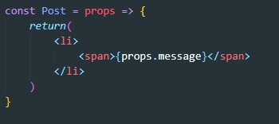
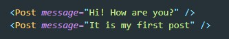
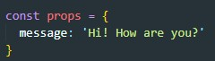

Каждая компонента - это функция, которая возвращает какой-то JSX код. Что бы этот код был динамичным, функция должна принимать какой-нибудь аргумент или параметр. Вот этот аргумент и называется props. props это объект с переданными параметрами в качестве включей этого объекта.
Но как нам теперь при вызове компоненты передавать аргумент? Ведь фактически функцию мы не вызываем, мы просто прописываем компоненту в виде тега. Передавать динамические данные можно с помощью атрибутов тега компоненты. Все переданные атрибуты будут группироваться в объект props. Например, рассмотрим вот такой код:
Здесь мы вызываем компоненту Post b создаем у нее атрибут message. Для компоненты Post будет создан объект props который будет выглядеть вот так:
Теперь в файле компоненты мы можем эти данные обработать. Названия атрибутов компоненты произвольные, как хотим так и называем.